data<-data%>%filter(location %in% c("Portugal", "Czechia", "Sweden", "Greece", "Jordan"))
data$date<-ymd(data$date)
data$month<-as.Date(cut(data$date, breaks = 'month'))
data<-data%>%select(month, location, new_cases, new_deaths, total_cases, total_deaths)COVID-19 data exploration
Context and significance of data set
This data set covers the new and total cases and deaths of COVID-19 in all countries, it is recorded in intervals of weekly and bi weekly. It also has a column for total cases and deaths. There are not only individual countries but also groups of low-income to high-income countries as well as the observations for the world. The date that this data set starts at is 2020-01-05 and ends at 2024-08-04.
This data set is very insightful because it shows the numbers of new cases and deaths for each country. This means that researchers can make meaningful comparisons between each country and can discuss reasons as to why there is such a discrepancy between COVID-19 cases in countries. For example, despite some countries having the same population size and GDP, their COVID-19 cases may have a huge difference, they could then compare how the country’s government handled the pandemic and evaluate the effectiveness of their actions. This could then further help develop new, more effective policies regarding public health and safety and prepare for the future, should there be another pandemic.
Data Wrangling
For my data set, I decided to choose 5 countries to explore, I had randomly picked 5 countries that had the population size between 10-11 million. This ended up being: Czechia, Greece, Jordan, Portugal and Sweden. Furthermore, according to the World Bank (2022), all 5 of these countries are upper-middle and high income countries. I then decided to keep just the new cases and deaths, total cases and deaths and the date at which each observation occurred. To make my data frame easier for myself to analyse, I created a new variable which showed the monthly occurrence of observations rather than weekly.
data<-data%>%unite(col = "country_date", location, month, sep = "/")
df_new_cases<-data%>%mutate(id=consecutive_id(country_date))%>%
reframe(value=sum(new_cases), .by = c(id, country_date))%>%
select(-id)
df_total_cases<-data%>%mutate(id=consecutive_id(country_date))%>%
reframe(value=(total_cases), .by = c(id, country_date))%>%
select(-id)%>%
group_by(country_date)%>%
summarise_all(last)
df_new_deaths<-data%>%mutate(id=consecutive_id(country_date))%>%
reframe(value=sum(new_deaths), .by = c(id, country_date))%>%
select(-id)
df_total_deaths<-data%>%mutate(id=consecutive_id(country_date))%>%
reframe(value=(total_deaths), .by = c(id, country_date))%>%
select(-id)%>%
group_by(country_date)%>%
summarise_all(last)
news<-merge(df_new_cases,df_new_deaths,by="country_date")
totals<-merge(df_total_cases, df_total_deaths, by="country_date")
final_df<-merge(news, totals, by="country_date")%>%rename("new cases" = value.x.x, "new deaths" = value.y.x, "total cases"= value.x.y, "total deaths"= value.y.y)%>%
separate(col = "country_date", into = c("country", "month"), sep = "/")My final data set which I named ‘final_df’ includes the country, month, new cases, new deaths, total cases and total deaths. When turning the date into year and month, it kept the day and changed that to ‘1’ , however this does not impact my data set.
Here is a sample of my data set:
| month | new cases | new deaths | total cases | total deaths |
|---|---|---|---|---|
| Czechia | ||||
| 2022-07-01 | 75008 | 181 | 4286328 | 40581 |
| 2023-07-01 | 345 | 4 | 4643069 | 42816 |
| Greece | ||||
| 2022-02-01 | 478425 | 2343 | 2411996 | 25869 |
| 2020-09-01 | 7545 | 122 | 18243 | 387 |
| Jordan | ||||
| 2021-06-01 | 14180 | 275 | 749319 | 9718 |
| 2024-08-01 | 0 | 0 | 1746997 | 14122 |
| Portugal | ||||
| 2021-05-01 | 18008 | 59 | 836944 | 17013 |
| 2022-09-01 | 69098 | 170 | 5470091 | 25039 |
| Sweden | ||||
| 2022-05-01 | 9071 | 216 | 2509503 | 19021 |
| 2021-02-01 | 91100 | 806 | 664854 | 12996 |
Data exploration and visualisation
Below is a table that shows the overall total cases and deaths as well as the mean of new cases and deaths (monthly) per country. As you can see, Portugal, Greece and Chezchia had a significantly larger amount of total cases than Jordan and Sweden despite despite having similar population sizes and all being HIC’s. This difference could be due to factors mentioned before such as government handling of the pandemic. The mean monthly cases and deaths roughly corresponds to the total cases and total deaths.
| country | Total cases | Total deaths | Mean cases | Mean deaths |
|---|---|---|---|---|
| Czechia | 4761919 | 43509 | 85034.27 | 776.9464 |
| Greece | 5673681 | 39258 | 101315.73 | 701.0357 |
| Jordan | 1746997 | 14122 | 31196.38 | 252.1786 |
| Portugal | 5664109 | 28809 | 101144.80 | 514.4464 |
| Sweden | 2755181 | 27399 | 49199.66 | 489.2679 |
I thought it would be interesting to visualise the distribution of the data and the quartiles therefore I decided to create box plots for total cases and deaths.
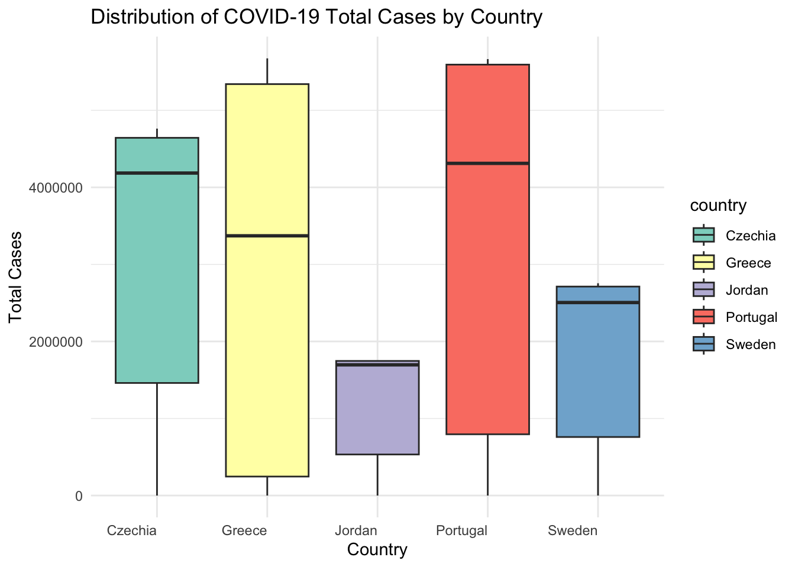
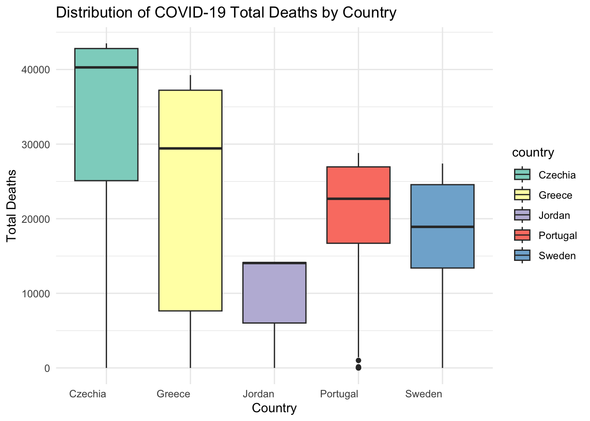
First off, we can see that there is a negative skew for the totals in each country, this is due to the fact that we are looking at cumulative cases and deaths, and therefore the numbers will keep increasing, thus causing this skew.
The box plot shows that Jordan has no whiskers, i.e. meaning that their upper quartile is the same as their max quartile. We can see that in the data frame, Jordan has stopped getting new deaths since 2022-September, whilst for others there are still new deaths occurring until recently in 2024. Hence why the interquartile range for Jordan is also close to the upper quartile.
Upon inspecting the box plots and data, it could be that either Jordan did an excellent job of eliminating new cases hence 0 deaths for the last 2 years or that the data is not correctly recorded. It is unlikely that the values are missing because other countries in the full data set have NA values whilst for Jordan it is 0.
I believe that creating box plots for the distribution of new cases and deaths would be more insightful as it shows the spread and variability of the observations over time.
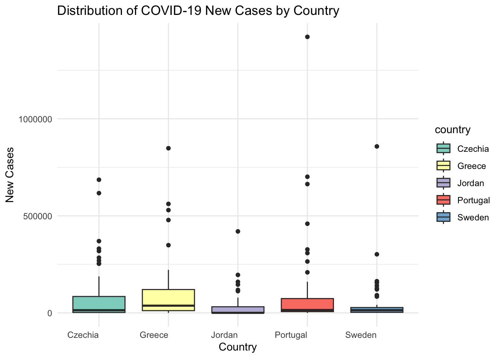
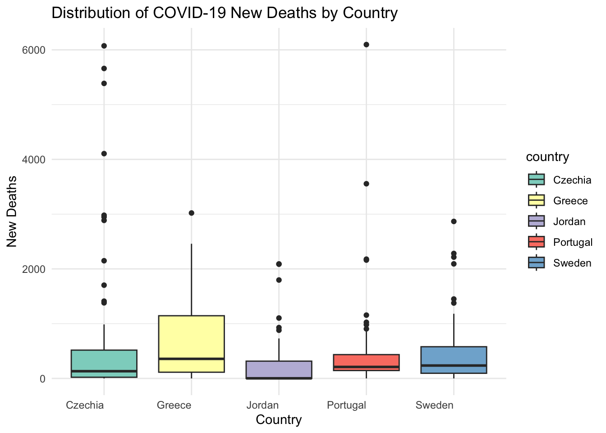
In these box plots, we can see a high number of outliers for all countries meaning that in some months, there was a huge spike in cases and deaths compared to the typical amount. The length of the actual box are all relatively short, meaning that the cases and deaths were relatively similar each month. However it seems like Greece has the most variability within the 50% of their data. The box plot shows that Greece and Czechia have a higher median compared to other countries, implying that there were more monthly cases. For Jordan, their middle 50% of deaths was close to their lower quartile, meaning that there is a positive skew where the mean is larger than the median.
To visualise the time frame of when the cases and deaths happened for each country, I created a line graph and created a function to automate the plotting.
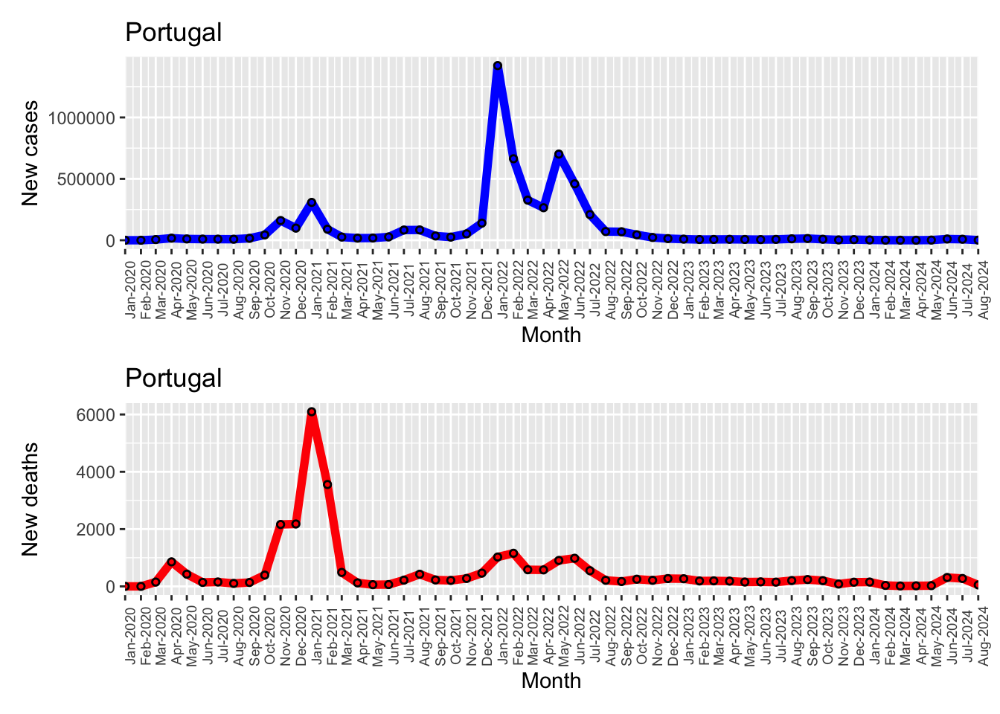
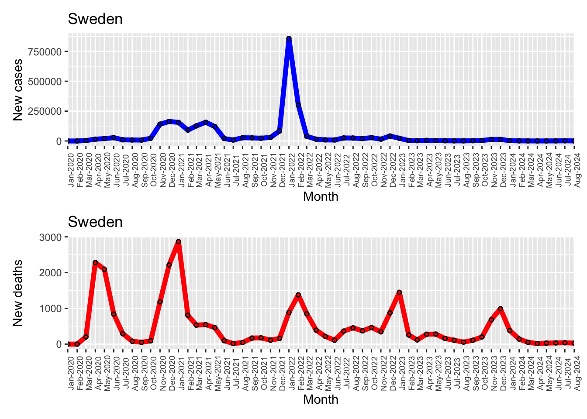
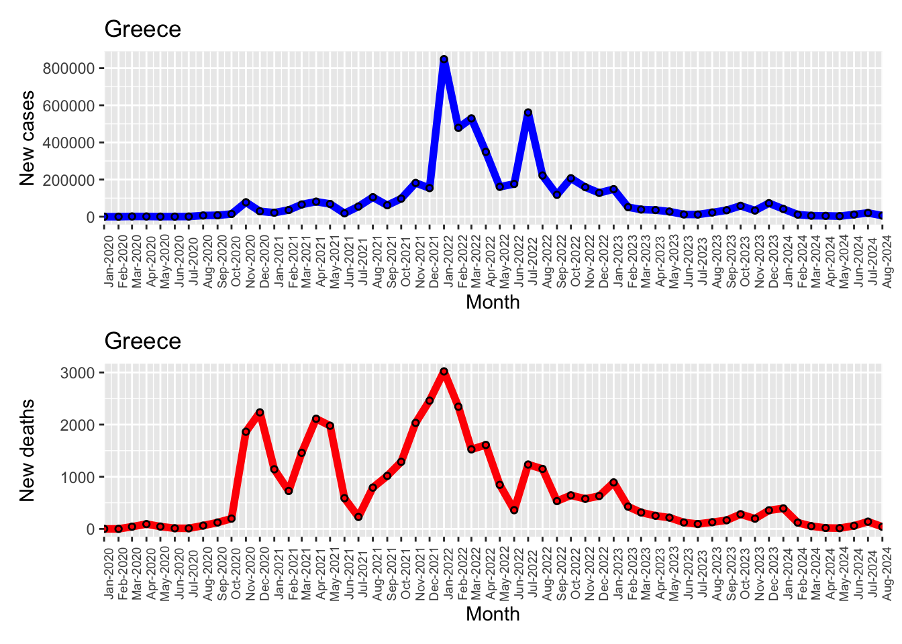
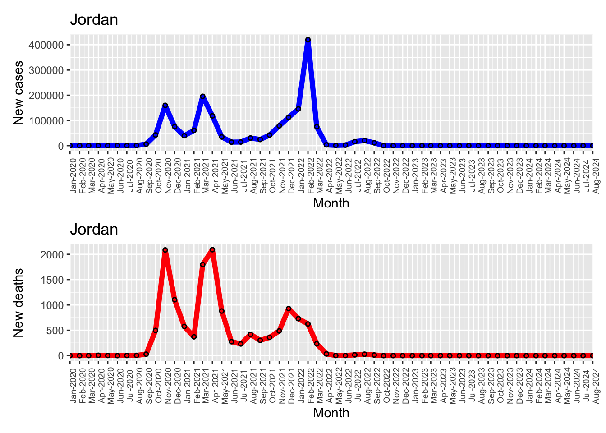
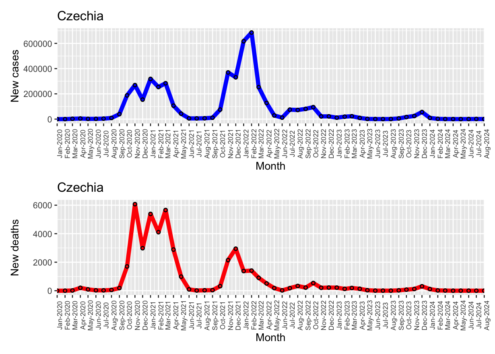
It is interesting to see that although Sweden’s new cases has remained relatively stable for the past 2 years, the amount of new deaths seem to spike up in the winter months. Maybe this could be due to Sweden having a high ageing population and therefore are more vulnerable to COVID-19, especially in the colder, harsher months. As mentioned during the box plots, Greece seems to have the highest variability, with quite long waves of deaths and cases.
To be able to compare each country in terms of their total cases and deaths, I overlapped each country in one graph.
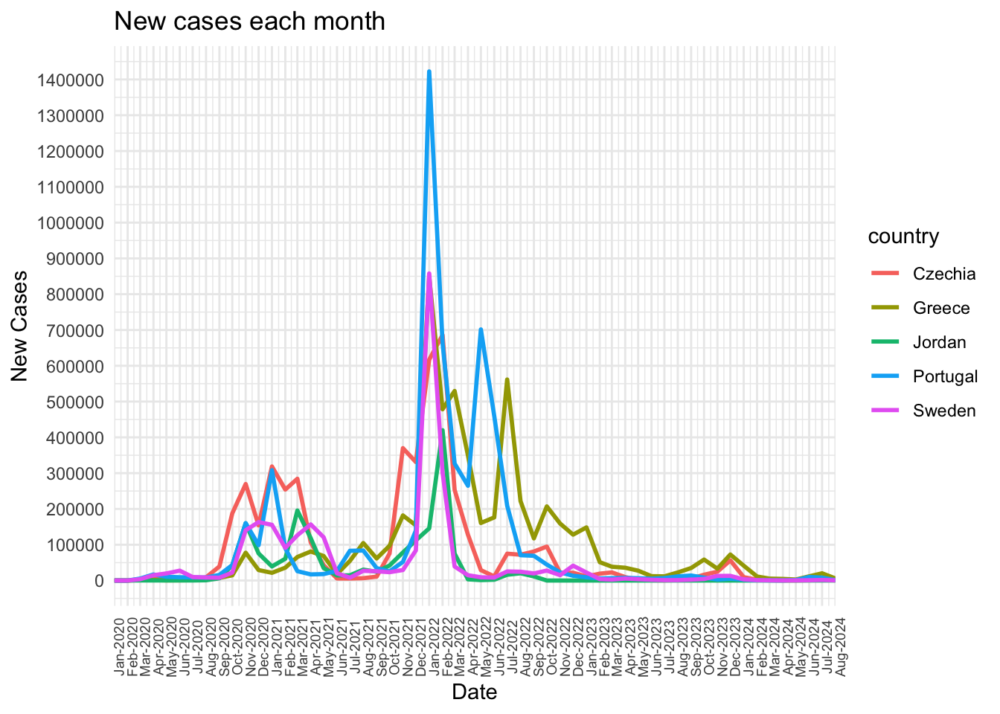
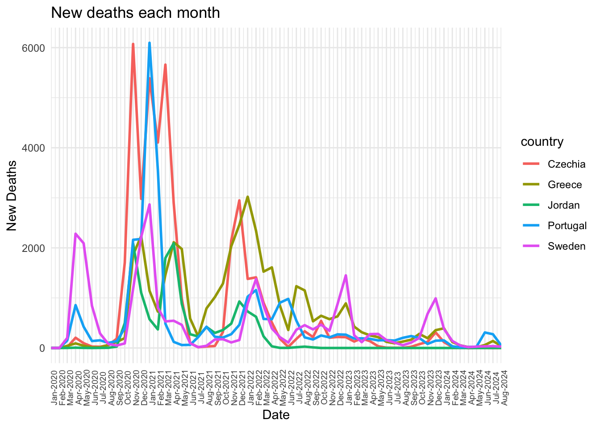
As you can see in the graphs above, there was a huge spike of new cases between October of 2021 to April 2022, however the number of deaths did not see such a huge spike, rather it was earlier on in the pandemic where there was a spike in deaths, between August 2020 to May 2021, when cases not as much. This could be due to the fact that earlier on in the pandemic, there were no vaccines meaning that there were more deaths despite having relatively less cases. However as vaccines were rolled out, we can see that despite a huge spike in cases, there were less deaths during the same time period.